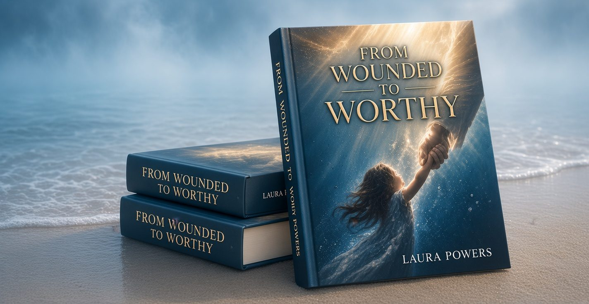

1:1 Transformation Coaching
Deep, personalized support to help you heal, gain clarity, and create lasting change in your life.
Heal · Grow · Rise · Belong
I’m Laura Powers — a coach, author, and advocate for women who are ready to move from survival to a life of healing, purpose, and deep self-worth.
You are
not too much.
You are becoming.Laura Powers
Release the past and reclaim your peace.
Feel confident, grounded and enough — just as you are.
Turn your story into purpose and possibility.
You don’t have to do this alone.
About Laura
I’m Laura Powers — a transformational coach, author, and speaker who helps women heal from their past, rebuild their self-worth, and create a life they truly love. My own journey through pain, healing and renewal taught me that we can turn our deepest wounds into our greatest purpose. Now, I’m here to walk alongside you.
My StoryYour wounds are not the end of your story. They are the beginning of your becoming.— Laura Powers
Coaching
Whether you’re healing, seeking clarity, or ready to step into your fullest life, there’s a path for you.
Deep, personalized support to help you heal, gain clarity, and create lasting change in your life.
A supportive community experience to heal, grow, and rise together.
Focused coaching sessions to help you gain direction, confidence, and a plan for what’s next.

The Book
A powerful journey from pain to purpose
From Wounded to Worthy is a raw, honest, and hope-filled exploration of healing, resilience, and rediscovering your worth. Through personal stories and practical insights, Laura Powers invites you to release the past, embrace your true value, and create a life of purpose and freedom.
Get Your CopyTestimonials
Heartfelt stories from women who have experienced healing, clarity, and renewed purpose through Laura’s coaching and work.
You are not too much. You are becoming. Let’s take the next step together.